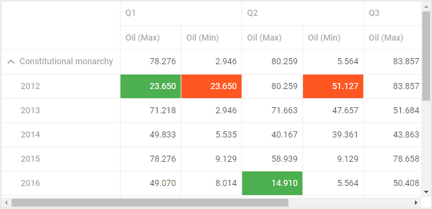
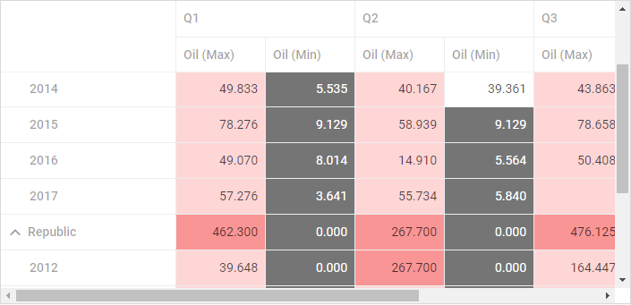
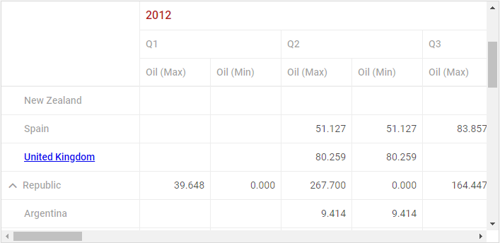
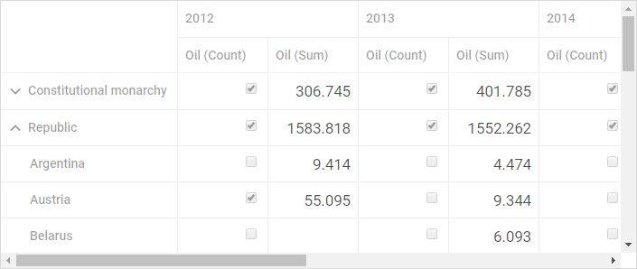
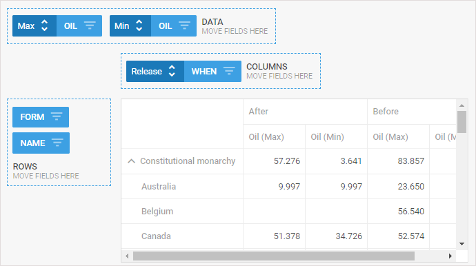
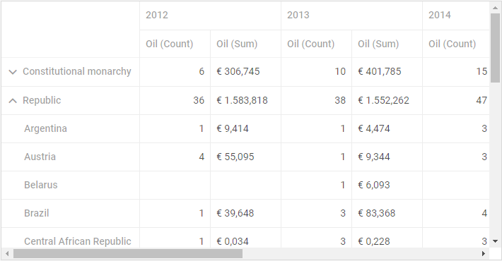

dhtmlxPivot provides you with a range of customization possibilities. You may color cells depending on their values, apply various styling for the headers of rows and columns and define custom date formats.
There is a possibility to highlight cells with particular data values. It can be implemented with the help of the mark configuration property. This option allows coloring cells, depending on the specified condition set by a function.
There are two predefined functions that find the min and max values in a column. You can refer to them and apply desired styles to the cells that contain min and max values. For this you need to specify the mark property and set its value as an object with two attributes that correspond to the described functions.
For example:
<style>
.max_cell {
background: #FF5722;
color: #FFF
}
.min_cell {
background: #4CAF50;
color: #FFF
}
</style>
var pivot = new dhx.Pivot(document.body, {
data: dataset,
fields: {
// the fields structure
},
fieldList: [
// the list of fields
],
// styling cells with min and max values
// via the predefined functions
mark: {
min: "min_cell",
max: "max_cell"
}
});

Related sample: Min/max mark - DHTMLX Pivot
You can also specify your own function that will define the logic of applying styles to cells with certain values. You need to use this function as a value of the mark property in the Pivot configuration object.
A custom function takes several parameters:
and must return a string with the name of the applied CSS class.
<style>
.mark {
background: #757575;
color: #FFF;
}
.customMaxCell {
background: #ffd6d6;
}
.biggestMaxCell {
background: #fa9595;
}
</style>
var pivot = new dhx.Pivot(document.body, {
data: dataset,
fields: {
// the fields structure
},
fieldList: [
// the list of fields
],
// styling cells with values less than 10
// via a custom function
mark: function (cell, columnData, row, column) {
if (column.method === "max") {
var max = Math.max.apply(null, columnData);
if (max === parseFloat(cell)) {
return "biggestMaxCell"
}
return "customMaxCell"
}
if (cell < 10 && cell !== null) {
return "mark"
}
return false;
}
});

Related sample: Custom mark - DHTMLX Pivot
You can change the appearance of column and row headers. For instance, if you want to style a column header and change its font, you can create a CSS class for that and use it in the template for the header. The template should be a function that returns the changed label.
.myCustomClass {
color: #b71c1c;
font-size: 16px;
}
new dhx.Pivot(document.body, {
data: dataset,
fields: {
// pivot fields structure
},
fieldList: [
{ id: "name", label: "Name" },
{ id: "year", label: "Year", template: function (text, obj) {
return '<span class="myCustomClass">' + text + '</span>'
}
},
// more fields
],
layout: {
rowsHeadersWidth: "auto"
}
});

Related sample: Headers template - DHTMLX Pivot
dhtmlxPivot provides you with the possibility to show any custom content in the datatable cells. You need to specify the cellTemplate property in the field object and define a function that will implement the logic of rendering content of cells. The template function takes three parameters:
For instance, you can show different content depending on the operation set for a column. In the example below the content of cells is specified in the following way:
var pivot = new dhx.Pivot(document.body, {
data: dataset,
fields: {
rows: ["form", "name"],
columns: ["year"],
values: [{ id: "oil", method: "count" }, { id: "oil", method: "sum" }],
},
fieldList: [
// previous fields
{
id: "oil",
label: "Oil",
cellTemplate: function (text, row, col) { if (col.method === "sum") { return '<div class="customCell">' + (text||"") + '</div>' } else { return '<input class="custom_div" type="checkbox" disabled ' + (text > 3 ? "checked" : "") + ' ></div>' }
}
},
{ id: "balance", label: "Balance" },
{ id: "when", label: "When", type: "date", format: "%d/%m/%Y" }
]
});

Related sample: Cells template - DHTMLX Pivot
You can add custom operations for grouping data by dates by using the addSubField method.
The method takes three parameters:
For instance, it can be useful if you want to group data into two columns relative to the release date:
var releaseDate = new Date(2017, 10, 10);
pivot.addSubField("when", function(val){
return val > releaseDate ? "After" : "Before"
}, "Release");
pivot.setFields({
rows: ["form", "name"],
columns: [{ "id": "when", "group": "Release" }],
values: [{ id: "oil", method: "max" }, { id: "oil", method: "min" }],
});

dhtmlxPivot provides the possibility to set custom format for values of cells. You can specify a custom format via the customFormat configuration property. It is a function that takes two parameters:
Thus it is possible to define different custom formats for values in columns that are assigned to different operations:
var myPivot = new dhx.Pivot("container", {
data: dataset,
fields: {
// initial pivot structure
},
fieldList: [
// the full list of fields
],
customFormat: function (cellValue, method) {
if (method === "count") {
return cellValue.toLocaleString("de");
}
return "€ " + cellValue.toLocaleString("de")
}
});
In the above example custom format is set for columns according to the following scheme:

Related sample: Custom formatting - DHTMLX Pivot
Back to top